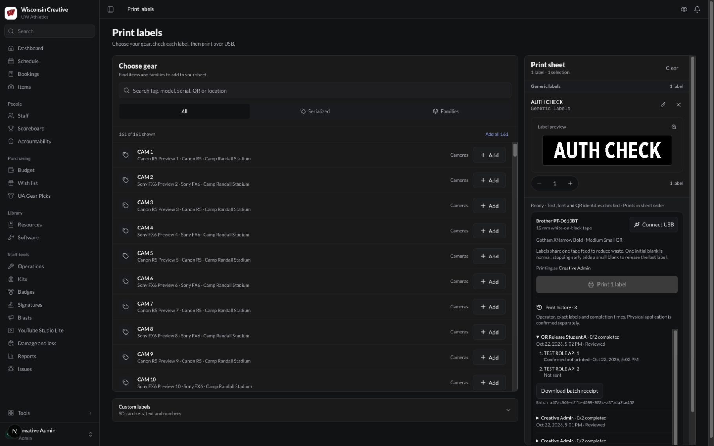

Authenticated preview checks passed
Actual admin and student sessions verified attribution, durable history, idempotent progress, revision conflicts, browser reservation, private student history and explicit staff reconciliation. Draft and history restore after reload. These synthetic checks sent no printer commands.
Migration 0202 matches its reviewed checksum, with five indexes and no failed receipts. Protected CI and the branch-owned hosted preview passed. Production deployment and readback are the final gate.
After-only authenticated evidence. Matched UI and accepted physical Stop/recovery evidence · Release state · Admin checks · Student/staff checks
